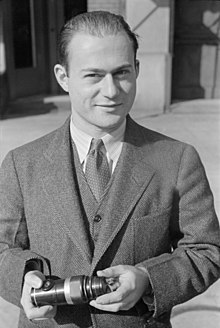
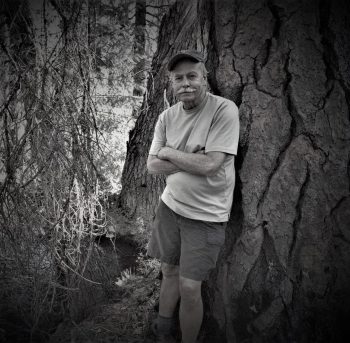
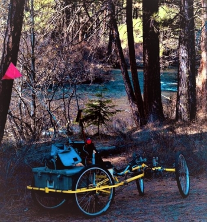
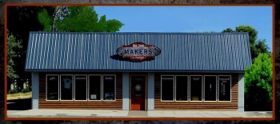

|
Dispatches from the Dry Side Culture, Curiosity and Character
about the Oregon East of the Cascade Mountain Range |
|
|
You know her---You love her. Now an icon in the sportswear business, Gert was once offered $15,000 for her recently departed husband's business. "I'll run it into the ground myself for that," she told him and walked out of the room. As the head of Columbia Sportswear she created one of the most famous brands in retail history, and a flagship of business success in Portland. What you didn't know was that she and her daugher have helped to transform the art scene in the Central Oregon town of Sisters. In 1973 Gert's daughter, Kathy, with her husband and little girl, settled in Bend where she opened a Columbia Sportswear outlet store. Kathy was a practicing artist and "When Mom would visit we talked constantly about the idea of creating a foundation for the arts. At that time the town of Sisters was undergoing a transformation, both architecturally and culturally, and was seen by some as the Jackson Hole of Central Oregon.
Kathy Deggendorfer and her Mom began discussing the idea of creating a foundation. “I live and work in Sisters, Oregon and Mom was a frequent visitor,” says Founder Kathy Deggendorfer. “We love rural Oregon, its scenic beauty, and the creative community of artists who live throughout our regions.” The focus of the foundaton would be to help celebrate art and creativity. "In 2002 we established The Roundhouse Foundation primarily using funds from mother's estate," Kathy related in an interview. The focus of the foundation would be to help celebrate art and creativity in Central Oregon and has since grown to include not only the arts, but of all the creative problems facing the rural areas of Central Oregon.
In 2017, the Roundhouse Foundation purchased Pine Meadow Ranch in Sisters to fulfill Deggendorfer’s long-term vision of creating a space for artists, conservationists, farmers, ranchers, educators and scientists to come together to share space and ideas while working in an inspirational setting. The Ranch serves as a model for interconnected work and the basis for collaborative economies. Now, through its grantmaking and investing, the Foundation has distributed over $5 million to hundreds of organizations that are paving the way for creative problem-solving in rural communities. Check their website for workshops, community programs and risidencies.
|
|
Arthur Rosenstein WPA Photographer in Central Oregon Their efforts produced some of the most iconic photographs of the Great Depression. The Resettlement Administration, later replaced by the Farm Security Administration (FSA), built relief camps and offered loans to those impacted by the Depression. There were two such camps in the area, one at Camp Sherman and one along the highway to Prineville. But the programs weren’t cheap and required significant government funding to maintain. Roosevelt hired Columbia University professor Roy Stryker as Chief of the Historical Section and also led the agency’s Photographic Unit. Stryker was tasked with documenting the need for government assistance by taking photographs of rural farmers at work and at home in their small-town communities, of migrants looking for work and of the effects of the Great Depression on everyday life in rural America and show the city people what it’s like to live on the farm. to look at the photographs click here |
|
So who was Billy Chinook?
William Parker was born in about 1826 and babtized at the Methodist Mission in The Dalles. A member of the Wasco tribe and orphaned at an early age he took on the Indian name Billy Chinook. From his uncle Billy learned the Indian ways, spending much of his childhood hunting and fishing along the Columbia River. He also spent time helping the Reverend Perkins at the mission. The River was the only home he had ever known but by the time he reached seventeen he yearned to learn some of the ways of the whites. That opportunity came up late in 1843 when Lieutenant John C Fremont and Kit Karson visited the Mission to lay in supplies for an expedition heading south through Central Oregon. In his journal Fremont described the village of The Dalles as ""two good-looking wooden dwelling-houses and a large schoolhouse, with stables, barn, garden and large cleared fields between there and the river's bank." Pastor Perkins knew of Billy's wanderlust and spoke on his behalf to Lt. Fremont. The Liutenant said he could not hire him but would take him along as his personal charge. Winter was approching when Fremont, Carson, Billy and twenty men left The Dalles and headed for the southern border of the Oregon Territory with 104 mules and horses and three months provisions. Many of the men were trappers and mountain men but some were botanists, mapmakers and men of science. The voyage was without incident as they made their way along the eastern side of the Cascade Mountains. Rumors of an Indian troubes in the Blue Mountains led Fremont to stay west of the Deschutes and on December first they arrived at the canyon of the Metolius River. Looking for a break in the shear cliffs, they crossed the river near what is now Perry South Campground. The exact coordinates are not known because Femont was experiencing problems with his sextant, but descriptions in his journal could lead one to that conclusion. Following a well worn game trail they made their way down the ice covered rocks and outcroppings. One of the mules carrying a load of sugar stumbled in the water and they ended up with a cargo of molassas. The howitzer they brough twith them weighed over 200 pounds and the men had to dismantel it and lower it down the cliffs with ropes. After they forded the river they made camp for a couple of days at Fly Lake to get refreshed and dried out before heading out to the southern border. Young Billy Chinook put his hunting and fishinig skills to work and took on any task that was given to him. Billy made quite an impression on Lt. Fremont and his journal entries read like a dramatic fiction. He praised high worship on Billy and Kit Carson, something would bring fame to both men. Fremont wrote in his journal "He (Billy Chinook) accompanied me to Washington, and, after remaining several months at Columbia College, was sent by the Indian Department to Philadelphia, where, among other things, he learned to read and write well, and speak the English language with some fluency." Chinook accompanied Fremont and Carson on one more expedition before settling down in Southern California where he married, started a family, and raised cattle. Billy returned to his original home in The Dalles and was elected one of three chiefs of the Wasco Nation, representing the Dalles Wasco. He Joined the US Army for one year and served as Army scout. He and the other chiefs fought Chief Paulina and Billy was was the signtory to the treaty that established the Warm Springs Reservation. Billy Chinook died in 1890 and is buried at the Warm Springs Reservaion. Lake Billy Chinook was formed in 1964 with the construction of the Round Butte Dam and was named for this celebrated Native leader.
|
|

Gary Albertson in Camp Sherman Gary Albertson was featured in an exhibition at the Photographic Image Gallery called Six
I spent the day with him where he lives at Camp Sherman, in the foothills of the Cacade Mountain Range.
I wanted to connect with Gary, catch up, and enjoy the solitude of Camp Sherman before the Summer crowd hit. It's a popular resort in Oregon, for fishing, hiking and long walks on the forest paths. Over his career Gary has been a writer, graphic artist, portrait painter, has done photographiy assignments all over the world and owned an art gallery in Sisters, Oregon. Now, at sixty years old, he is suffering from Pigment Dispersion Glaucoma, an inherited disease. He is going blind.
As we spent the day on the river and in the forest, I soon realized that he was exhibiting what could only be called an Extreme Posivity. He refuses to look at his affliction has to keep him moving forward.
"My first entry into the artworld was working as a graphic designer, then I broke away and started my own graphic design business. I dealt with alot of photographers and realized that mabye I could do that, so I did." That served him well and before long he was getting assignments. "Then one day I was in Sisters and happeed by a gallery and frame studio. It was owned by an Italian couple who were getting ready to retire. In 2001 I boughtthe business, I taught myself to frame and before long my photography was filling most of the walls."
In 2010 Gary's eye problems were becoming evident and so he sold the Gallery. He was living in Camp Sherman at the time and continued to photograph. "I've been enjoying my photographic journey into sightlesness."
He told me a favorite story about a three-legged dog. "In awhle the dog doesn't know he has a handicap and he just runs with the other dogs." It's a great lesson to look at it that way. "For me, still at 72, just as I've been since a child, getting lost in nature, being captured in mesmerizing shapes,color and movement and sounds, and only using every ounce of my mind to capture it and share it. My memory has very much improved from my blindness." Everybody in Camp Sherman knows Gary and loves him. When I got the the Camp Sherman store I asked the clerk if she knew someone named Gary Albertson. Three people answered me back. He can be seen riding in his elecric quad all over. "I have a zen way of photographicing." Gary said. "You must let it capture you before you can capture it." He describes his approach like that of using a geiger counter. "I just sweep what's before me, sweep-sweep-sweep, until the clicks come together." "I have even given serious thought that someday, as my eyesight fails beyond my ability to photogarph, to find a writing partnership my word skills. Gotta find that book "If you Want to write" by Brenda Ueland...it was quite insprational for my photographic passions many years ago." Gary loves giving talks at a local gallery, and loves to inspire people with "what is in me." He describes it as astate of pleasure. What's next for Gary? He will keep photographicing until his sight leaves him and is thinking about turning to writing. Once the Pandemic is over he is hoping to be able to attend a workshop in South Amreica with a very well known author |
|

Thirty-Five years ago I held a booksigning at the Photographic Image Gallery in Portland for Rick Steber. The occasion was a signing party for one of his first books.
Imagine my pleasure to re-connect with him in Prineville at the opening of his new gallery, Makers.
Through his books, the gallery, and many public appearances he has established himself of one of Oregon's premiere storytellers and poets keeping the West alive. I'm always curious about the creative process, and I think you are too. Over the years I have reviewed the works of many artists, both hopefuls and accomplished. It always leads to an internal focus and the drive to be always going forward and deeper. Whether it's as a writer, artist, dancer or filmmaker, everybody has an internal voice that needs to speak.
I posed that same question to Rick.
I grew up in the Klamath Basin. There were a lot of "real characters" living there back then. I loved to listen to those old timers spin stories. But like a lot of kids who grow up rural, I thought I was missing something by not being in the city.
After college I moved to Portland. But every time I came home, back to the east side of the mountains, I'd find out more and more of these "old timers" that I had known as a kid had died. It slowly began to dawn on me that they were taking all those fabulous stories to their graves. The stories were being lost. And then one day I saw a quote that changed the direction of my life. That quote was - "Every time an old person dies it's like a library burning down."
I made the decision to dedicate my life to interviewing the old timers and saving the stories that would otherwise be lost. Over the years I've interviewed about 20,000 people, taken a couple million photographs and written more than fifty books.
One time I was asked why I write what I write. Charlie Russell, the famous western painter, was asked why he painted what he painted and he said, 'Because I wanna get it all down before it's gone.' And I guess that's why I write what I write - "I wanna get it all down before it's gone." One of Oregon's best known authors and cowboy poets, Rick is the recipient of the Western Writers of America Golden Spur award for Best Western Novel. He currently has over 40 titles in print, sales of of over two million books, and four have been optioned by film companies. Visit Rick's website ricksteber.com Try one book and you'll be hooked
His podcasts, The Western Way, can be heard on KSJJ in Redmond and also at backyardbend.com/podcast/westernway |